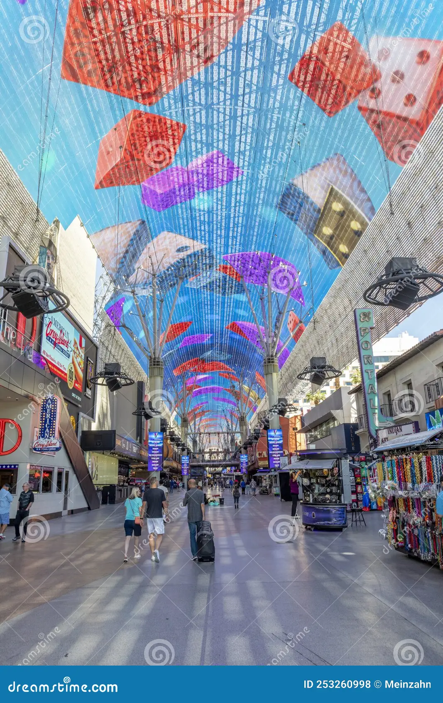

Fremont Street is a street in downtown Las Vegas, Nevada that is the second most famous street in the Las Vegas Valley – and Nevada – besides the Las Vegas Strip. Named in honor of explorer and politician, and coordinator of the Sacramento River massacre John C. Frémont and located in the heart of the downtown casino corridor, Fremont Street is today, or was, the address for many famous casinos such as Binion's Horseshoe, Eldorado Club, Fremont Hotel and Casino, Golden Gate Hotel and Casino, Golden Nugget, Four Queens, The Mint, and the Pioneer Club.
Prior to the construction of the Fremont Street Experience, the western end of Fremont Street was the representative scene for Las Vegas that was included in virtually every television show and movie that wanted to depict the glittery lights of Las Vegas. The abundance of neon signs, like cowboy Vegas Vic, earned the street the nickname of "Glitter Gulch".
Fremont Street is designated between Main Street and Sahara Avenue in a northwest–southeast direction, although auto traffic actually begins at Las Vegas Boulevard. At Sahara, it leaves Las Vegas proper and continues as Boulder Highway. Fremont Street formerly carried several national highways, including U.S. Route 93 (US 93), US 95, and US 466. US 93 and US 95 have been rerouted along Interstate 515 (now-Interstate 11), while US 466 has been decommissioned. The section of Fremont Street east of the Fremont East District is currently designated Nevada State Route 582.